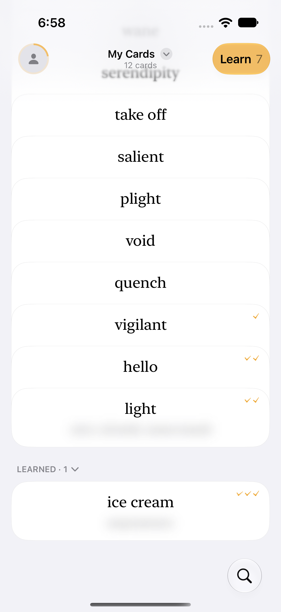
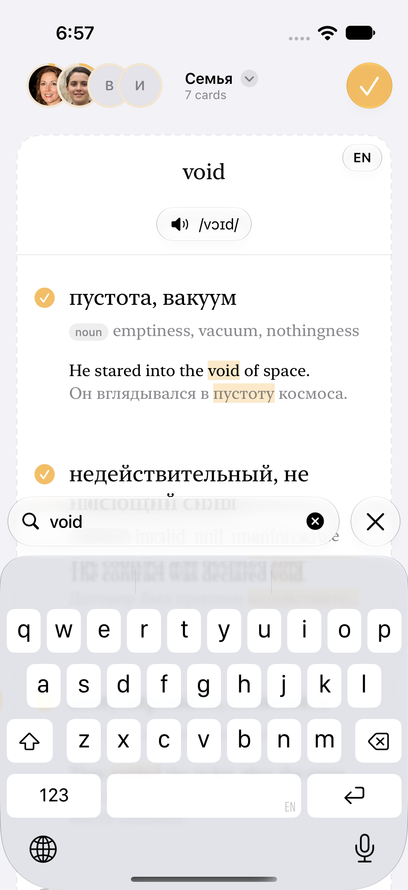
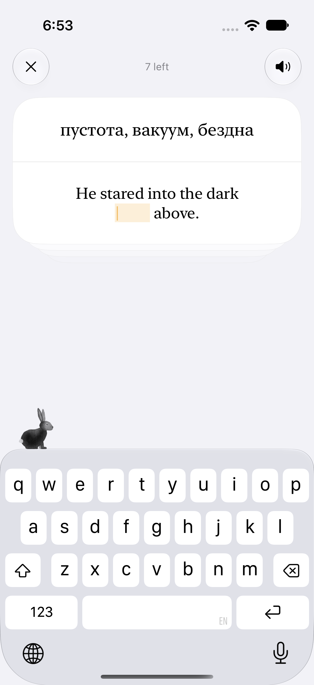
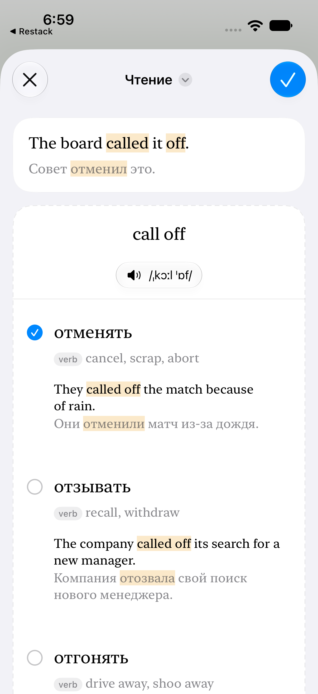
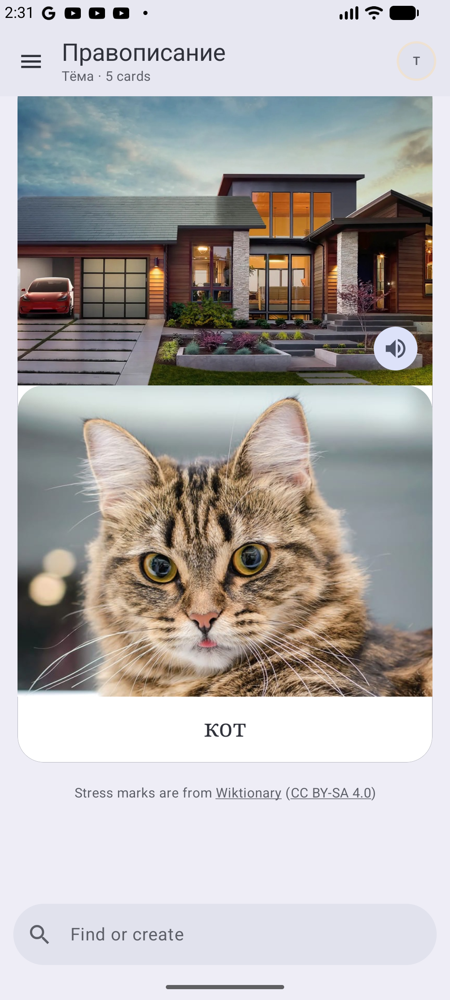
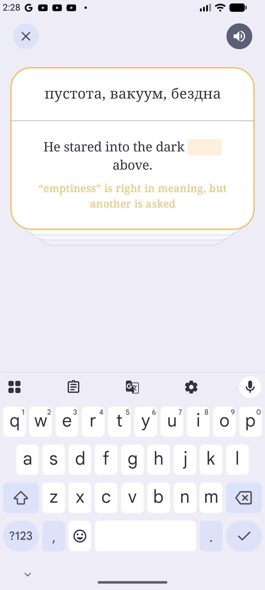
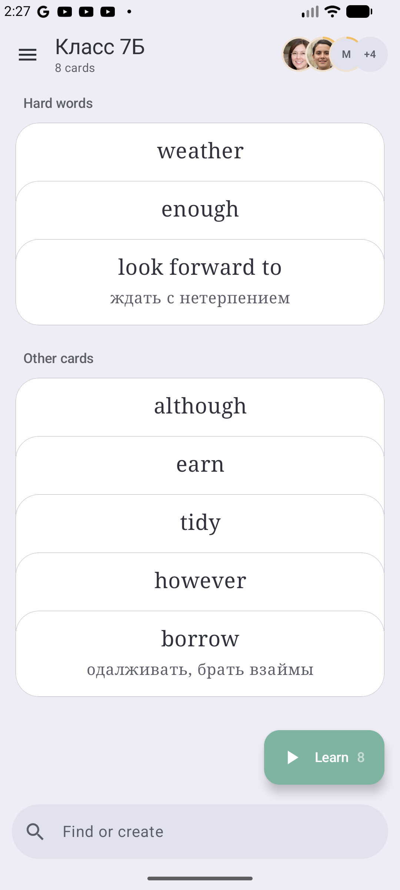
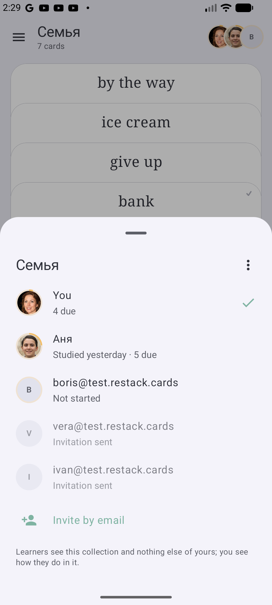

Restack
Native iOS and Android app for vocabulary and spelling practice. Create cards from words, pictures, or text shared from another app; learn with spaced repetition; share collections and follow learners’ progress.
SwiftUI & SwiftData · Kotlin & Jetpack Compose · Go & PostgreSQL
Selected storyboard screens from automated UI tests with demo accounts. Open any image at full size.
iOS

Cards to review, progress marks, and a folded pile of learned words.

One field searches the deck and drafts new cards, with meanings and examples to choose from.

Type the missing word in an example sentence. Each answer updates the review schedule.

Share a sentence, tap a word or phrasal verb, and save the meaning it has in context.
Android

Picture and spoken-word prompts for spelling practice, including parent-led learning.

A valid synonym earns a hint and another attempt without revealing the word being practiced.

Teachers see the hardest words for a class and can focus on an individual learner.

Invite learners and follow their activity. Each learner keeps a separate review schedule.